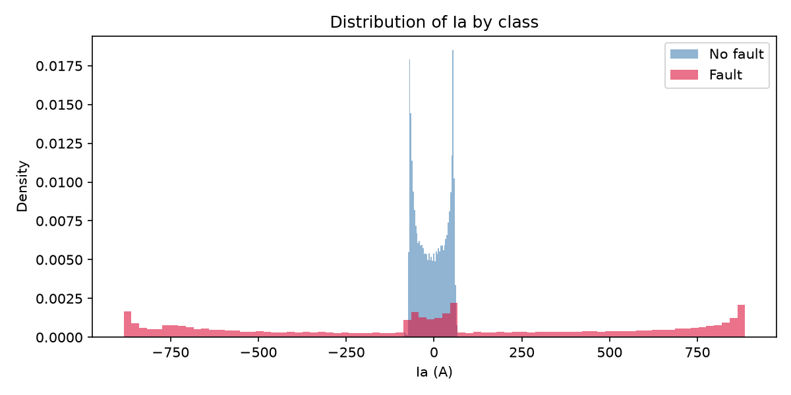
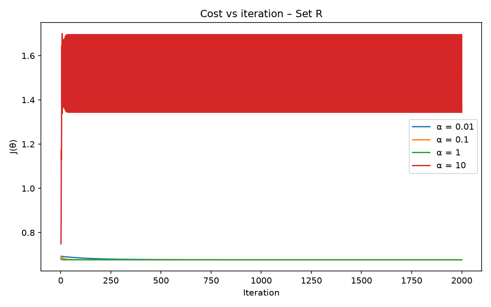
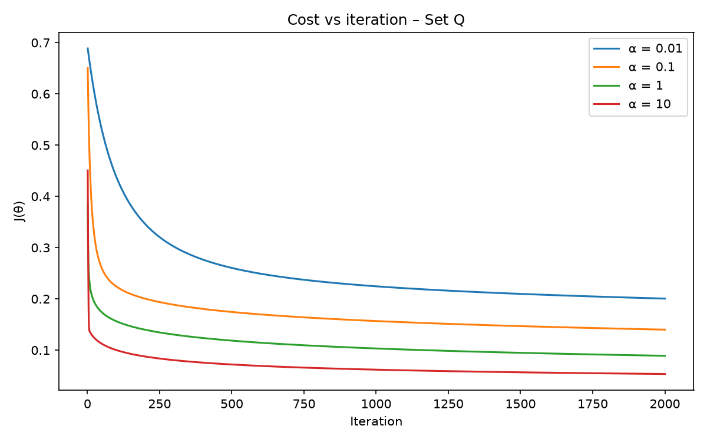

Figure 1: Current Waveforms (First 2,000 Rows)
During normal steady-state, phase currents follow balanced sinusoids. When a short-circuit fault strikes (red shaded bands), currents spike drastically with severe transient DC offsets.

Figure 2: Annular Ring Geometry (Ia vs Ib)
Normal operating points (blue) cluster compactly at the origin. Fault states (red) form an annular ring surrounding them. Because AC alternates polarity, no straight line can separate them.

Figure 3: Phase A Current Distribution
Normal currents have a narrow bell curve centered at zero. Fault currents have heavy tails past ±800 A. Because both distributions share a zero center, quadratic terms (I²) are mandatory.

Figure 4: Cost vs Iteration — Set R (Raw)
Cost begins at log(2) ≈ 0.693147. Learning rates α ∈ {0.01, 0.1, 1} decrease monotonically. α = 10 diverges. Largest strictly monotone learning rate: α = 1.0.

Figure 5: Cost vs Iteration — Set Q (Quadratic)
With quadratic terms, cost plunges rapidly from 0.693 to 0.0534. All learning rates decrease monotonically. Chosen learning rate: α = 10.0.

Figure 6: SVM Validation Accuracy vs C (Log Scale)
Linear SVM flatlines at ~72.6% across all C values. RBF SVM with γ = 1.0 reaches 99.67% accuracy at C = 100 with only 266 support vectors.
Table 1 — Data Preparation & Partitioning
| Property | Specification / Value |
|---|---|
| Raw Rows / Columns | 12,001 rows / 9 columns |
| Columns Removed (all NaN) | Unnamed: 7, Unnamed: 8 |
| Missing Values After Cleaning | 0 (Clean dataset) |
| Class Distribution (Overall) | 5,496 Fault (45.8%) / 6,505 No-Fault (54.2%) |
| Train / Validation / Test Rows (60/20/20) | 7,200 / 2,400 / 2,401 |
| Fault Fraction (Train / Val / Test) | 0.4607 / 0.4512 / 0.4565 (Balanced) |
Table 2 — Logistic Regression Optimization
| Feature Set | Dimensions | Chosen α | Final J(θ) | Validation Accuracy |
|---|---|---|---|---|
| Set R (Raw) | 6 + bias | 1.0 | 0.677161 | 73.08% |
| Set Q (Quadratic) | 12 + bias | 10.0 | 0.053434 | 97.83% |
Table 3 — SVM Validation Grid Matrix
| Kernel | C | γ | Validation Accuracy | Support Vectors (out of 7,200) |
|---|---|---|---|---|
| linear | 0.1 | – | 72.58% | 5,849 |
| linear | 1.0 | – | 72.58% | 5,843 |
| linear | 10.0 | – | 72.58% | 5,835 |
| linear | 100.0 | – | 72.62% | 5,835 |
| rbf | 0.1 | 0.1 | 95.00% | 1,347 |
| rbf | 0.1 | 1.0 | 98.04% | 848 |
| rbf | 1.0 | 0.1 | 97.50% | 723 |
| rbf | 1.0 | 1.0 | 99.17% | 482 |
| rbf | 10.0 | 0.1 | 99.21% | 381 |
| rbf | 10.0 | 1.0 | 99.62% | 342 |
| rbf | 100.0 | 0.1 | 99.54% | 174 |
| rbf (Best) | 100.0 | 1.0 | 99.67% | 266 |
Table 4 — Held-Out Test Evaluation (N = 2,401)
| Model | Accuracy | TN (True No-Fault) | FP (False Alarm) | FN (Missed Fault) | TP (True Fault) |
|---|---|---|---|---|---|
| Logistic Regression (Set R) | 72.64% | 1305 | 0 | 657 | 439 |
| Linear SVM (C=100) | 73.64% | 1305 | 0 | 633 | 463 |
| Logistic Regression (Set Q) | 97.88% | 1299 | 6 | 45 | 1051 |
| RBF SVM (C=100, γ=1) | 99.58% | 1301 | 4 | 6 | 1090 |
Table 5 — Learned Parameters θ (Set Q Model)
| Weight | Feature | Learned Value | Physical Significance |
|---|---|---|---|
| θ₀ | bias (intercept) | +24.920914 | Global intercept offset |
| θ₁ | Ia | +2.327292 | Linear phase current |
| θ₂ | Ib | -5.358084 | Linear phase current |
| θ₃ | Ic | -1.736503 | Linear phase current |
| θ₄ | Va | -0.533569 | Linear phase voltage |
| θ₅ | Vb | +0.416726 | Linear phase voltage |
| θ₆ | Vc | +0.098580 | Linear phase voltage |
| θ₇ | Ia² | +18.891238 | Strongly Positive: Current magnitude surge → Fault |
| θ₈ | Ib² | +4.754256 | Strongly Positive: Current magnitude surge → Fault |
| θ₉ | Ic² | +13.956918 | Strongly Positive: Current magnitude surge → Fault |
| θ₁₀ | Va² | -6.027636 | Strongly Negative: Voltage collapse → Fault; High voltage = Safe |
| θ₁₁ | Vb² | -6.464258 | Strongly Negative: Voltage collapse → Fault; High voltage = Safe |
| θ₁₂ | Vc² | -6.140745 | Strongly Negative: Voltage collapse → Fault; High voltage = Safe |
6.1 — Why do LR (Set R) and Linear SVM score almost identically?
Both models are linear classifiers operating on the exact same 6 standardized features. Logistic regression searches for the hyperplane minimizing negative log-likelihood; Linear SVM maximizes the margin. Both are constrained to a flat hyperplane in 6D space. Because the normal operating states form a compact core surrounded by an annular ring of fault states, no flat plane can separate the interior cluster from the exterior ring. Both models converge to essentially the same boundary (~72.6% – 73.6%), confirming that raw instantaneous measurements are not linearly separable.
6.2 — Physical explanation of learned Set Q weights (Positive I² vs Negative V²)
During a short-circuit fault, impedance collapses (Z → 0), causing huge current surges: I = V/Z. Therefore, high current magnitude squared (I²) is a direct indicator of an electrical fault. The positive weights on Ia², Ib², Ic² (+18.89, +4.75, +13.96) push θ²x strongly positive, shifting sigmoid output towards 1 (Fault). Concurrently, line voltage collapses (voltage sag). In normal operation, voltages remain healthy near nominal rating. The negative weights on Va², Vb², Vc² (-6.03, -6.46, -6.14) ensure that healthy high voltages push θ²x strongly negative, driving the sigmoid output towards 0 (No Fault).
6.3 — Comparing Support Vectors: Linear SVM vs RBF SVM
The best Linear SVM required 5,835 support vectors out of 7,200 training rows (81.0%). A massive number of support vectors indicates severe margin failure — nearly the entire dataset consists of margin violators because a hyperplane cannot separate an annular topology. In contrast, the best RBF SVM required only 266 support vectors (3.7%). The Gaussian RBF kernel projects the 6 features into an infinite-dimensional Hilbert space where the annular geometry becomes cleanly separable, requiring only a small fraction of critical boundary vectors.
6.4 — How Hyperparameter C Influences Accuracy and Support Vectors
The hyperparameter C controls the penalty on margin violations in the objective min ½||w||² + C Σ ξ. At small C (0.1), violations are cheap → wide margin, 1,347 support vectors, 95.0% accuracy. As C increases to 100, misclassifications are penalized heavily, forcing the boundary to conform strictly around the true complex boundary. Support vectors drop from 1,347 down to 266, while validation accuracy climbs to 99.67%.
6.5 — Temporal Correlation & Test Set Leakage: Optimistic or Pessimistic?
The reported test accuracy is optimistic for a real-world protective relay. Because the rows are consecutive time samples from a continuous numerical simulation, random uniform row-splitting allows adjacent time steps of the exact same physical fault transient (which differ only by microseconds) to land in both training and test sets. In actual substation deployment, the relay encounters completely new fault events with unseen inception angles and impedances.
6.6 — Which model to deploy in a physical protective relay?
In protective relay engineering, the asymmetric cost of errors is paramount: Missed Faults (False Negatives) are catastrophic (conductor melting, substation explosions, grid collapse), while False Alarms are only operational nuisances. Both linear models miss over 630 faults (unacceptable). The RBF SVM missed only 6 faults (with 4 false alarms, 99.58% accuracy). The Set Q Logistic Regression missed 45 faults but runs in < 1 μs on microcontrollers. Deploy RBF SVM (or an ensemble of both) for maximum safety.
1. Sigmoid Function & Hypothesis
hθ(x) = g(θTx) = 1 / (1 + e-(θTx))
2. Clipped Cost Function J(θ)
To avoid log(0) numerical underflow, probability predictions are clipped to [10-12, 1 - 10-12]:
J(θ) = - (1 / m) ℓ(θ)
At initialization θ = 0⃗, h = 0.5 for all x, yielding: J(0⃗) = -log(0.5) = log(2) ≈ 0.693147.
3. Batch Gradient Descent Update Rule
Vectorized: θ := θ + (α / m) · XT(y - hθ(X))
4. Evaluation Metrics (From Scratch)
Confusion Matrix = [[TN, FP], [FN, TP]]
Missed Faults = FN (Actual 1, Predicted 0)
False Alarms = FP (Actual 0, Predicted 1)